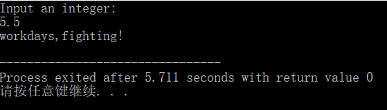

原文出处:本文由博客园博主梓樊提供。
原文连接:https://www.cnblogs.com/zsuzifan/p/first_c_experiment.html
原文连接:https://www.cnblogs.com/zsuzifan/p/first_c_experiment.html
一、实验目的
- 熟悉c语言集成开发环境
- 掌握c程序结构，熟悉c程序编码规范
- 掌握c程序编写、编译、运行、调试方法
- 掌握基本数据类型、常量、变量的使用
- 掌握常用运算符用法，掌握表达式求值规则
二、实验准备
实验前，请围绕以下内容复习教材第1章、第2章相关内容：
1. 一个完整的c程序结构和书写规范（教材1.2节）
2. c程序的编写、编译、运行、调试方法
3. c语言中标识符命名规则、常量、变量
4. c语言中常用运算符用法及表达式求值（教材第2章）从理论上分析并记录《C语言程序设计教程学习指导》P116三道练习中表达式的值。（后面再通过编程实验运行检验理论分析结果是否正确）
三、实验内容
- Part 1: 验证性内容
- 在c程序开发环境下编写运行一个简单c程序，在屏幕上输出自己的学号。在教材P2例1.1基础上稍作改动，把hello,world→改成自己的学号。
- 在c程序环境下输入教材P3例1.2程序，并编译、运行。
- 在c程序开发环境下，分别编写、运行《C语言程序设计教程学习指导》P116三道练习，记录其运行结果，与之前理论分析结果比较，观察是否存在不一致的部分。如有，尝试查找和分析原因。
- Part 2: 按要求写出符合要求的表达式，补全程序。
- 判断奇偶: ex1.c
- 根据不同的输入，显示不同提示信息：ex2.c
- 根据用户输入字符，判断如果是小写字母，则转换成大写；否则保持原样: ex3.c
- Part 3: 编程练习(===选做题===)
编写程序，实现把一个十进制整数转换成二进制。十进制整数由键盘输入，转换后的二进制数据输出到显示器上。
四、实验结论
Part 1: 验证性内容
未明显踩坑，未出现运行结果与预想不符的情况。Part 2: 按要求写出符合要求的表达式，补全程序。
1. 判断奇偶: ex1.c
#include <stdio.h>
int main() {
int x;
printf("输入一个整数: \n");
scanf("%d",&x);
if(x%2!=0) // 使得当表达式成立时，判定x是奇数，否则是偶数
printf("是奇数");
else
printf("是偶数");
return 0;
}
运行结果：
2.根据不同的输入，显示不同提示信息：ex2.c
#include <stdio.h>
int main(){
int days;
printf("Input an integer:\n");
scanf("%d",&days);
if(days>=1&&days<=5) // days在1到5之间
printf("workdays,fighting！\n");
else if(days==6||days==7) // days是6或7
printf("weekend,relax~\n");
else
printf("Ooops, not in 1~7\n");
return 0;
}运行结果：

3.根据用户输入字符，判断如果是小写字母，则转换成大写；否则保持原样: ex3.c
// 功能：
// 从键盘上输入单个字符
// 如果是小写字母，则转换成大写后输出
// 否则，什么也不做，原样输出
#include <stdio.h>
int main()
{
char ch;
printf("输入一个字符:\n");
scanf("%c",&ch);
if(ch>='a'&&ch<='z') //判定ch是小写字母的表达式
ch=ch-32; //把ch中的小字母转换成大写字母的表达式语句
printf("%c\n",ch);
return 0;
}运行结果：

Part 3: 编程练习
ex4.c
//编写程序，实现把一个十进制整数转换成二进制。
//十进制整数由键盘输入，转换后的二进制数据输出到显示器上。
#include <stdio.h>
int main() {
printf("Please input a decimal number:\n");
int x,t;
scanf("%d",&x);
while (x!=0){
t=x%2;
printf("%d",t);
x=x/2;
}
return 0;
}运行结果：
五、实验总结与体会
这是第一次上机做实验，非常看着自己写出来的代码运行起来，有一种淡淡的自豪感。尝了这样一点点甜头，我对这门课今后的学习更加有信心了。
毕竟这是第一次，作为初学者，发现了很多不足的地方：
1. 键盘使用不熟练；
写头几个程序时，无法盲打单双引号、尖括号、"#"、"%"、"&"、"*"和"!"等符号。
2.经常打错或少打多打字符；
3. 语句后容易忘加分号，尤其是"scanf"、"printf"、"return 0"后；
4. 对于C语言编程中空格的使用不清楚；
5. 字符常量字符变量以及格式控制符"%c"还没弄清楚，做相关补全程序实验时出现困难；
6. 还不会让程序循环运行，运行完一次程序就会结束，不能多次循环，多次输入数据。关于这次实验我也有几个疑问：
- 为什么教材P3例1.2求整数乘积要定义product函数，而不简单地直接用表达式求积？
- 做Part 2第二题时，发现输入5.5是程序会把数字当成整型5处理，似乎是因为一开始定义的变量days是整型变量。所以实型5.5会强制转换成整型？
- 做Part 3编程练习时发现数字大于64时，转换成二进制数就会出现问题。好像最大只能化为七位二进制数，是因为这台电脑整形默认是八位吗？如果要转换更大的十进制数，该如何设计？另外，不会设计奖浮点型十进制数化成二进制数的程序。